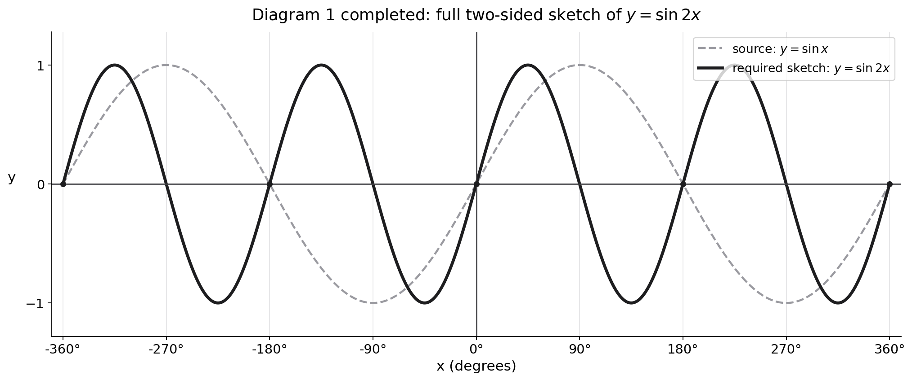

Figure 4 shows part of the graph of the curve with equation \(y=\sin x\)
Given that \(\sin\alpha=p\), where \(0<\alpha<90^\circ\)
(a) state, in terms of \(p\), the value of
(i) \(2\sin(180^\circ-\alpha)\)
(ii) \(\sin(\alpha-180^\circ)\)
(iii) \(3+\sin(180^\circ+\alpha)\)
(3)
A copy of Figure 4, labelled Diagram 1, is shown on page 27.
On Diagram 1,
(b) sketch the graph of \(y=\sin2x\)
(2)
(c) Hence find, in terms of \(\alpha\), the \(x\) coordinates of any points in the interval \(0<x<180^\circ\) where
\(\sin2x=p\)
(3)
[8 marks]

Strategy and why this applies. Derive each shifted-angle sine value from the angle-addition or angle-subtraction formula before substituting \(\sin\alpha=p\). Formula or definition first.
Start from the assessed identities, not an assumed diagram rule. The addition formula is \(\sin(A+B)=\sin A\cos B+\cos A\sin B\), and the subtraction formula is \(\sin(A-B)=\sin A\cos B-\cos A\sin B\). Also, \(\sin180^\circ=0\) and \(\cos180^\circ=-1\). These exact values explain every sign in this part.
(i) Derive the supplement value. Write \(180^\circ-\alpha\) as the subtraction \(A-B\):
\[\sin(180^\circ-\alpha)=\sin180^\circ\cos\alpha-\cos180^\circ\sin\alpha=0-(-1)\sin\alpha=\sin\alpha.\]Since \(\sin\alpha=p\), multiplying by 2 gives \(2\sin(180^\circ-\alpha)=2p\).
(ii) Derive the first negative identity explicitly. This time the order is \(\alpha-180^\circ\), so apply the subtraction formula with \(A=\alpha\) and \(B=180^\circ\):
\[\sin(\alpha-180^\circ)=\sin\alpha\cos180^\circ-\cos\alpha\sin180^\circ=-\sin\alpha-0=-\sin\alpha=-p.\]The minus sign comes from \(\cos180^\circ=-1\); it is not a relationship supplied by the question and must not be asserted without this derivation.
(iii) Derive the second negative identity explicitly. Use the addition formula:
\[\sin(180^\circ+\alpha)=\sin180^\circ\cos\alpha+\cos180^\circ\sin\alpha=0-\sin\alpha=-\sin\alpha=-p.\]Therefore \(3+\sin(180^\circ+\alpha)=3+(-p)=3-p\). The three requested values, in the printed order, are \(2p,-p,3-p\).
Sense check and transfer trigger. Because \(\alpha\) is acute, \(180^\circ-\alpha\) lies in quadrant II where sine is positive, while \(\alpha-180^\circ\) lies between \(-180^\circ\) and \(-90^\circ\) and \(180^\circ+\alpha\) lies in quadrant III; sine is negative in both places. The quadrant signs confirm the formula derivations. On a similar shifted-angle question, write the addition/subtraction formula, substitute the exact sine and cosine of the special angle, and only then replace \(\sin\alpha\) by the given symbol.
Strategy and why this applies. The inside factor 2 halves the period: period \(=180^\circ\). Formula or definition first.
Step 1 — effect of the inner 2. Replacing \(x\) by \(2x\) compresses the graph horizontally by a factor of 2: points occur at half the \(x\)-value.
Step 2 — new period. The parent \(y=\sin x\) has period \(360^\circ\). So \(y=\sin2x\) has period \(360^\circ/2=180^\circ\).
Step 3 — sketch. One complete wave now fits between \(0^\circ\) and \(180^\circ\) (zeros at \(0,90,180\); max at \(45\), min at \(135\)).
Step 4 — trap. Leaving the period at \(360^\circ\) is the common error; the wave is squashed, not stretched.
Step 5 — transfer trigger and exam technique. For \(y=\sin(kx)\), the period is \(\frac{360^\circ}{k}\) (or \(\frac{2\pi}{k}\) in radians). Here \(k=2\), so the period halves to \(180^\circ\); the graph is compressed horizontally, meaning more waves fit in the same width, not fewer. A reliable sketch: mark the zeros at \(x=0^\circ,90^\circ,180^\circ\), the maximum at \(x=45^\circ\) (value \(+1\)) and the minimum at \(x=135^\circ\) (value \(-1\)), then join them with the usual sine shape. Always label the axis with the new key angles; if you drew the standard \(0,90,180,270,360\) grid you would place the features wrongly. The amplitude is unchanged at 1 because the 2 only affects the period.
Strategy and why this applies. Use the graph's symmetry to place the partner root in range. Formula or definition first.
Step 1 — first solution. \(\sin2x=p=\sin\alpha\) gives \(2x=\alpha\), so \(x=\tfrac{\alpha}{2}\) (inside the required interval).
Step 2 — second solution from symmetry. The other angle with the same sine is the supplement of \(2x\): \(2x=180^\circ-\alpha\), so \(x=90^\circ-\tfrac{\alpha}{2}\).
Step 3 — sense check both lie in range. Because \(\alpha\) is acute, \(\tfrac{\alpha}{2}<45^\circ\) and \(90^\circ-\tfrac{\alpha}{2}>45^\circ\); both sit inside the interval, by symmetry of the sine wave.
Step 4 — trap. Giving only one root (the \(\tfrac{\alpha}{2}\) one) and missing the partner by symmetry loses the second solution mark.
Step 5 — transfer trigger and exam technique. An equation \(\sin(2x)=p\) with \(0<p<1\) has exactly two solutions in any \(360^\circ\) interval for the angle \(2x\), so two values of \(x\). After writing \(2x=\alpha\) (principal) and \(2x=180^\circ-\alpha\) (supplement), divide BOTH by 2 to get \(x=\tfrac{\alpha}{2}\) and \(x=90^\circ-\tfrac{\alpha}{2}\) — do not forget to halve the second one. Then check each lies inside the interval the question specifies; here both do because \(\alpha\) is acute. If the interval were wider you might also add the \(+180^\circ\) (or \(+360^\circ\)) repeats, but only list solutions the question asks for. Stating just one root is the usual lost-mark error on this part.
Sense check. Both roots give sin(2x)=sin(alpha), and both lie in the stated interval. On another paper, a sine equation should trigger principal and supplementary angle families before interval filtering.